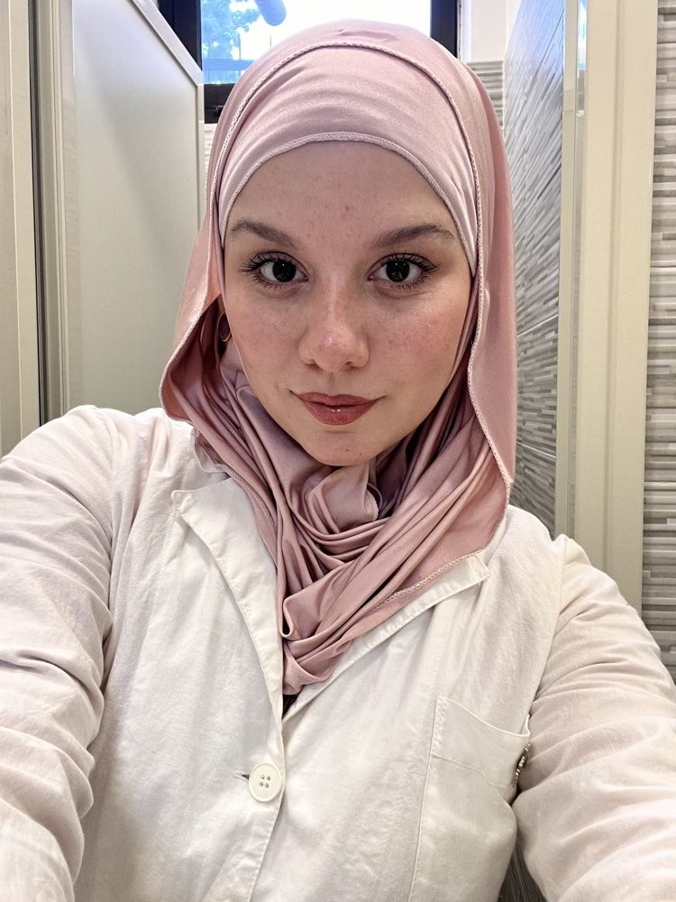
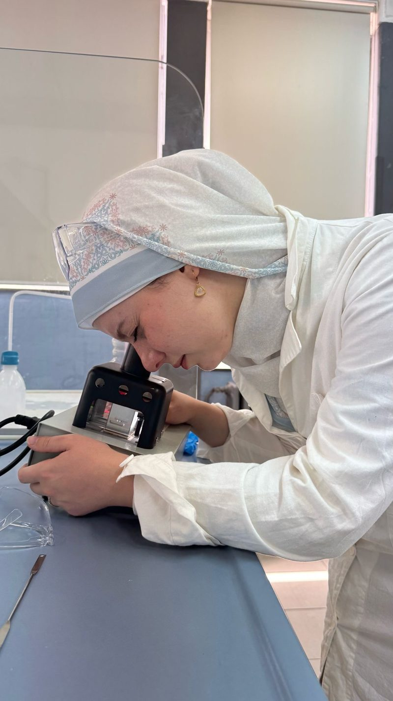

Farmacista di formazione, sviluppatrice per vocazione. Programmo da autodidatta da tempo — C, Python, Visual Basic — e sto ora costruendo le basi da full stack web developer, con la stessa precisione che porto in ogni cosa che faccio.


Sto per completare la Laurea Magistrale in Farmacia alla Sapienza, ma la tecnologia è una passione che coltivo da tempo per conto mio: studio C, Python e Visual Basic in autonomia, e a settembre porto questo percorso a un livello superiore con un corso intensivo di JavaScript per diventare full stack developer. In parallelo continuo a seguire corsi e certificazioni in intelligenza artificiale.
Farmacia, liceo classico e programmazione sembrano tre strade diverse, ma per me sono la stessa: al classico ho imparato a decifrare sistemi di regole — greco e latino, sintassi e struttura — molto prima di incontrare quelle del codice. La chimica e la farmacologia mi hanno abituata al metodo scientifico: un'ipotesi, una verifica, un risultato coerente. Il codice non è una deviazione da questo percorso: è la stessa logica applicata a un linguaggio nuovo.
In questi anni ho lavorato nel retail e nella consulenza dermocosmetica, dove ho imparato a leggere dati, costruire routine su misura e mantenere precisione anche sotto obiettivi stringenti — le stesse abitudini che oggi porto nello studio della programmazione: analisi, metodo, sicurezza nelle proprie capacità.
Ho vissuto a Barcellona e a Sofia, esperienze che mi hanno abituata a muovermi con disinvoltura tra lingue e contesti diversi: parlo inglese fluentemente e mi muovo molto bene sia in francese che in spagnolo.
Percorso Microsoft × AI Skills Alliance, completato tra giugno e agosto 2026 — dai fondamenti dell'intelligenza artificiale alle sue applicazioni nelle diverse aree aziendali.
Pratico tiro con l'arco: la stessa concentrazione, respiro controllato e precisione millimetrica che metto in laboratorio e, oggi, nelle prime righe di codice. Mira, metodo, costanza — non cambia molto da un campo di tiro a un editor di testo.